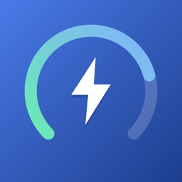
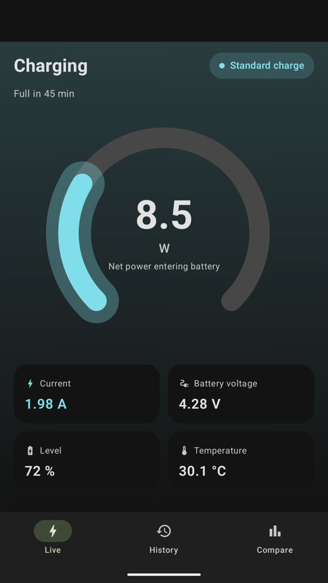
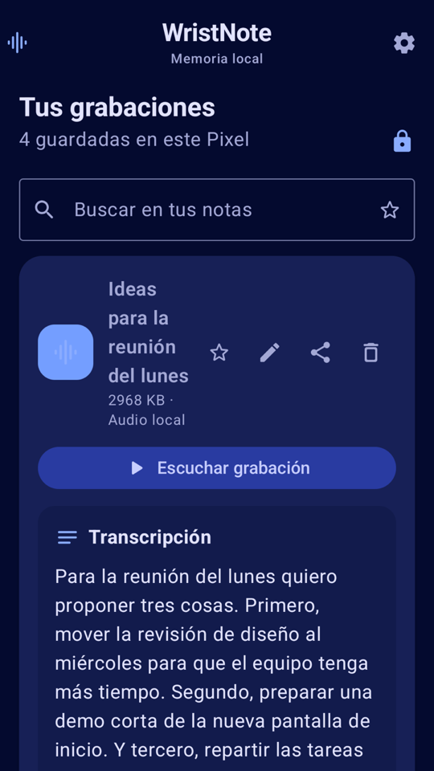

Android · Wear OS
AmpereLab
Measure the real watts going into your phone and compare USB‑C chargers and cables. No root. No ADB.

Platform engineer
By day, the Movistar+ CDN. In my spare time, small apps for Android, Wear OS and macOS that solve everyday problems.
Built for fun. Some are already on Google Play.

Android · Wear OS
Measure the real watts going into your phone and compare USB‑C chargers and cables. No root. No ADB.

Wear OS · Android
Tap your watch and your phone records. Transcribed and summarized on the phone itself, no cloud.

macOS
Your Android apps, in Mac windows.
macOS · Android
Copy on the Mac, paste on the phone. And your phone notifications on the computer, end-to-end encrypted.
macOS
Your Pixel Buds battery, in the Mac menu bar.
Android · On-device AI
Practice English with a language model that runs on the phone itself, offline.
Android
Nearby chargers for EV road trips across Spain and Italy, with what each one costs.
Windows · macOS · Linux
One-click SSH tunnels to the management consoles of HP ProLiant and Huawei servers. Version 1.0 is called “Sampras”.
I have worked on the Movistar+ CDN since 2010, the network that delivers video to millions of screens across Spain, Europe and Latin America.
Today I lead a small platform team. My obsession hasn’t changed: automate everything we can, so a few people can look after a lot of infrastructure without surprises.
I’m also the person people ask about AI at work, and I enjoy helping other teams get real value out of it.